01 · Estructura común
Para empezar a realizar el trabajo he definido la estructura inicial, poniendo el menú de navegación y
el footer para tener la misma estructura en todos los archivos que iba a tener la aplicación, dado que
cada «lugar» iba a ser puesto como un HTML diferente: index.html, barrio.html,
pueblo.html, pais.html e instituto.html.
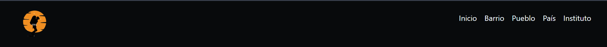
Navbar principal
Navbar principal de la aplicación realizada con Bootstrap: el logo a la izquierda y
los enlaces a cada página a la derecha, alineados con d-flex,
justify-content-end y align-items-center.
Footer
Footer común para todas las páginas realizado con Bootstrap: los derechos
reservados centrados y, debajo, el autor y el curso repartidos en dos columnas
(col-6).
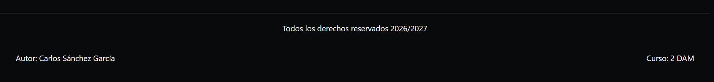
02 · Modo claro y modo oscuro
Después añadí un botón con un icono de sol/luna al final del menú. Al pulsarlo, script.js
cambia la clase del <body> entre modoClaro y modoOscuro, y
cada clase redefine las variables CSS --bg-color, --text-color,
--card-bg y --card-text. Así todos los elementos cambian de color a la vez
sin tocar el HTML. Para probarlo usé tarjetas de ejemplo.
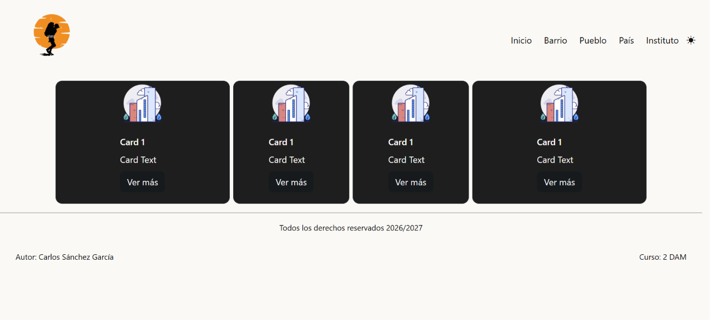
Modo claro: fondo claro y tarjetas oscuras.
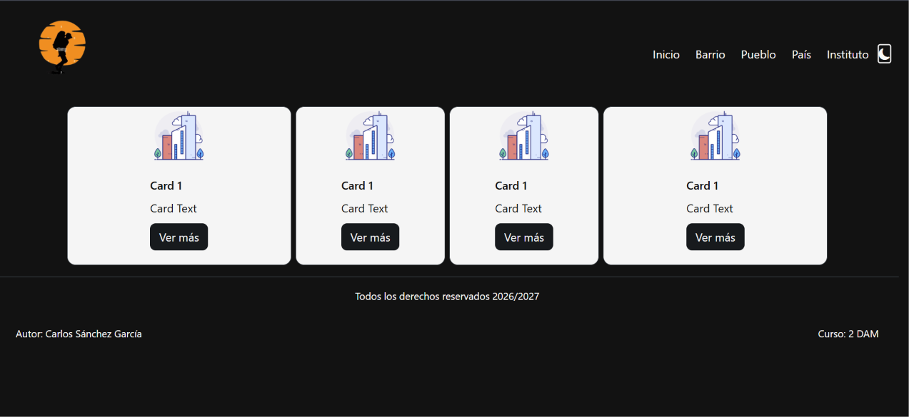
Modo oscuro: fondo oscuro y tarjetas claras.
03 · Página de inicio
Con la estructura lista, sustituí las tarjetas de ejemplo por el contenido real de la guía y pasé el
CSS en línea a clases de Bootstrap, dejando en CSS solo lo que Bootstrap no tiene (el naranja
#F08E21, el espaciado entre letras o la altura mínima de las fotos).
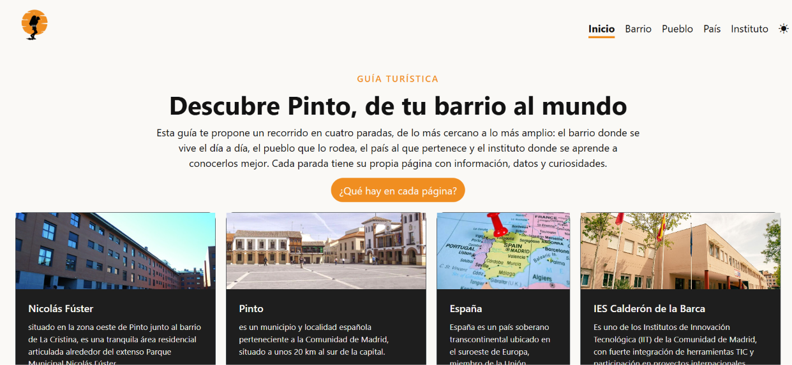
Introducción y tarjetas
Una introducción «Descubre Pinto, de tu barrio al mundo» con un botón que baja a la siguiente sección, el enlace de la página actual subrayado en naranja y una tarjeta con foto por cada parada: barrio, pueblo, país e instituto.
¿Qué hay en cada página?
Tarjetas horizontales enlazadas a cada página, con una pregunta guía, etiquetas
con iconos de Bootstrap Icons y un botón. Usan la rejilla de Bootstrap 6
(md:col-5 / md:col-7): en móvil la foto queda arriba y en escritorio
al lado del texto.
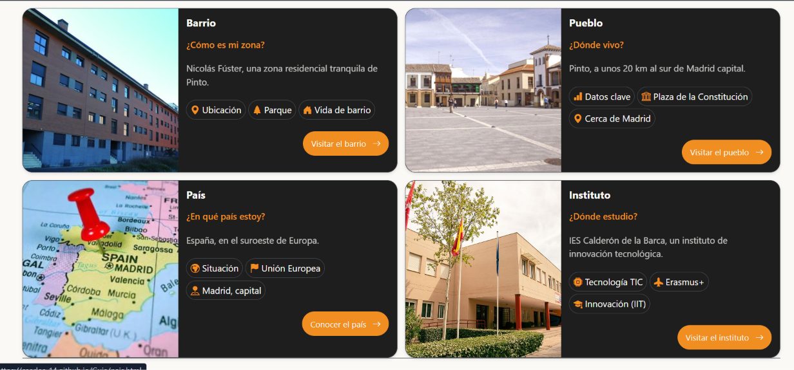
04 · Guía práctica e itinerario
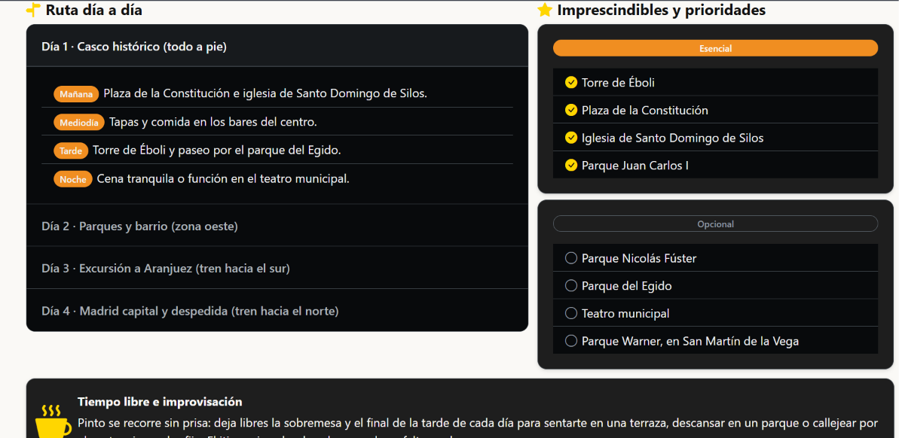
Añadí a la página de inicio la información de viaje: contexto del destino, logística y una ruta de cuatro días.
- Ruta día a día: acordeón de Bootstrap 6, que se
construye con
<details>y<summary>; cada día se abre al pulsarlo. - Imprescindibles y opcionales: dos
list-groupdiferenciados con una insignia. - Tiempo libre: un bloque final que recuerda dejar huecos sin planificar.
05 · Página del barrio
En la página del barrio quería que lo importante se viera de un vistazo, así que la organicé en bloques cortos con iconos en lugar de párrafos largos.
- Lo que tienes que saber: un recuadro destacado con lo que sí hay y lo que no suele haber al otro lado de la vía de Renfe.
- Qué se puede hacer: seis tarjetas con planes, del Parque Fúster a escaparse a Madrid en Cercanías.
- Dato: la zona de campo para rutas en bici o a pie está justo al lado.
- Pisos nuevos: una sección aparte con la foto de las viviendas recientes y una etiqueta de «Obra nueva».
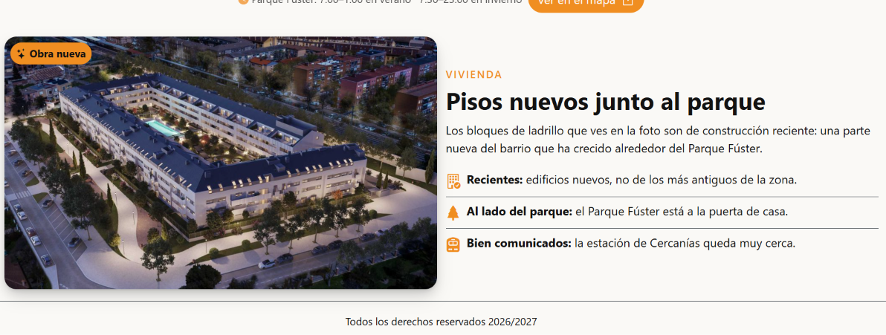
06 · Instituto: explorador de estudios
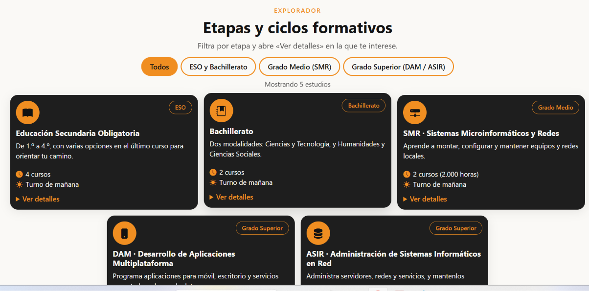
Para la página del instituto quería algo interactivo. El explorador muestra una tarjeta por enseñanza (ESO, Bachillerato, SMR, DAM y ASIR) y unos botones para filtrarlas.
- Cada tarjeta lleva un
data-categoriay el JavaScript oculta las que no coinciden con el filtro, con una transición suave. - Un contador indica cuántos estudios se están mostrando.
- Debajo hay un test de tres preguntas que recomienda una rama y lleva al explorador ya filtrado.
07 · Instituto: maqueta 3D
Por último, una maqueta 3D del centro hecha solo con CSS y JavaScript, sin librerías.
- Cada edificio es una caja con cinco caras colocadas con
transform,perspectiveypreserve-3d. Las caras las crea el JavaScript a partir de atributosdata-(posición, ancho, fondo y alto). - Se gira arrastrando con el ratón o el dedo, con las flechas del teclado o con los botones de giro, zoom y giro automático.
- Los números siempre miran a la cámara; al pulsarlos, la zona se pinta de naranja y el panel muestra su ficha.
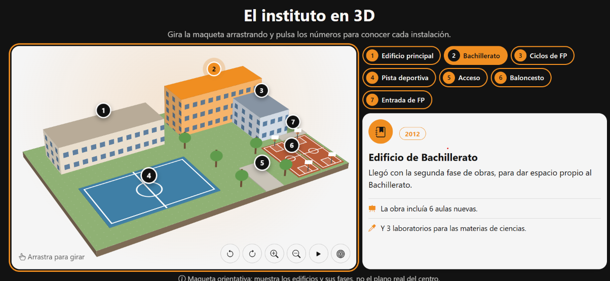
08 · Uso de la inteligencia artificial
Durante el desarrollo me apoyé en dos asistentes de IA, Claude y Gemini, para generar código, redactar textos y resolver dudas. Estas capturas muestran las peticiones que hice y para qué usé cada respuesta, ordenadas por página.
Página de inicio
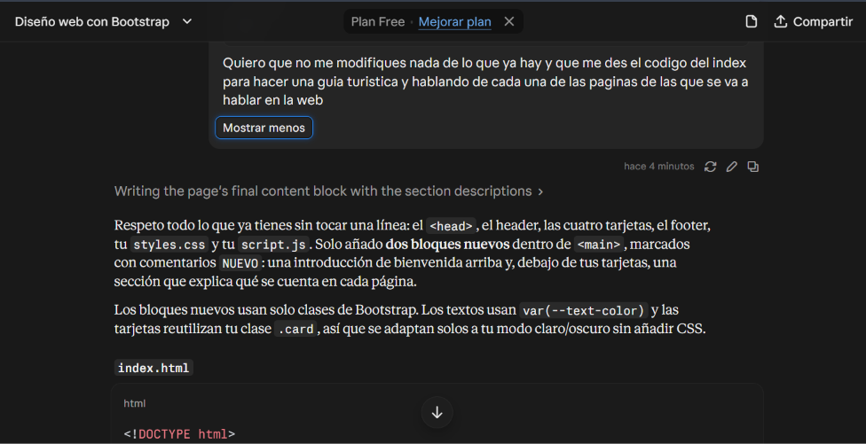
Le pedí el código del index para convertirlo en una guía turística que hablara de cada página, sin modificar lo que ya tenía.
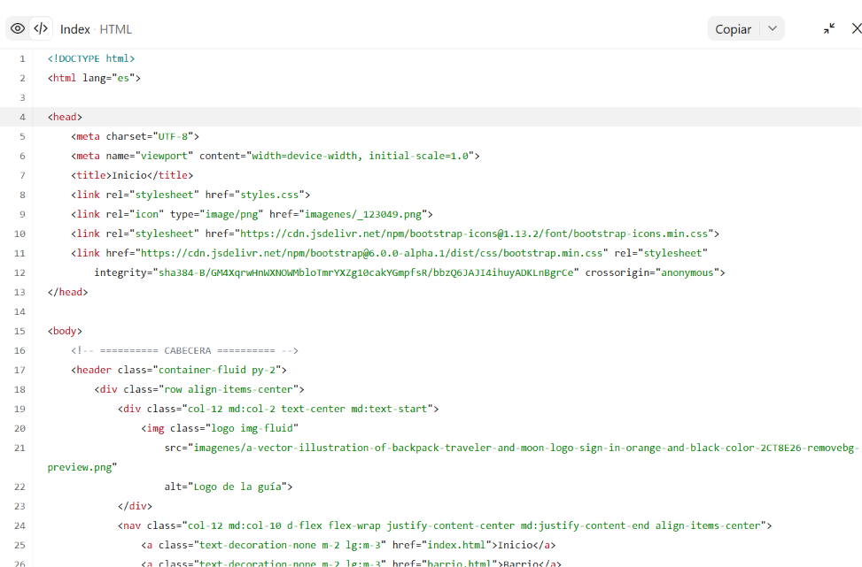
La respuesta: el index completo, con la cabecera responsive y las clases de Bootstrap 6 (md:col-*).
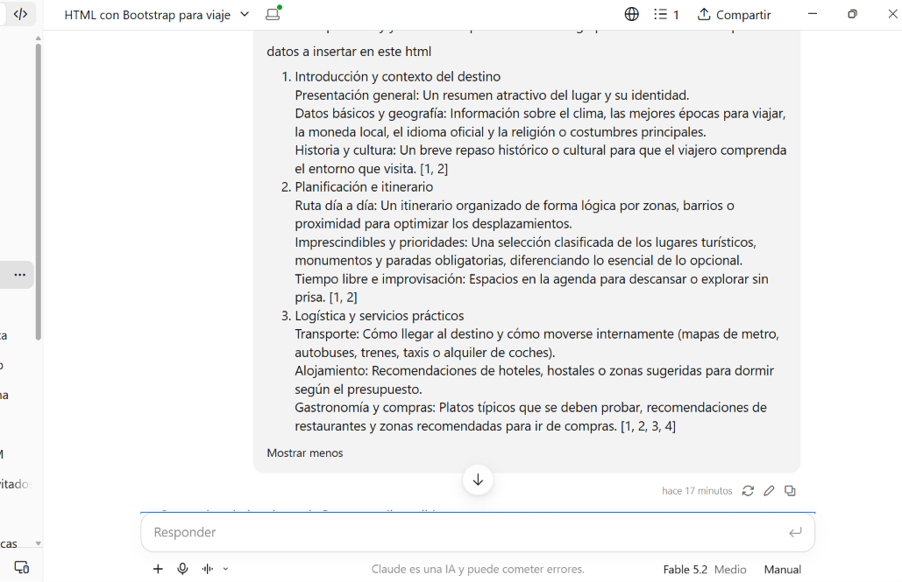
Le pasé los apartados que debía tener la guía: contexto del destino, itinerario y logística.
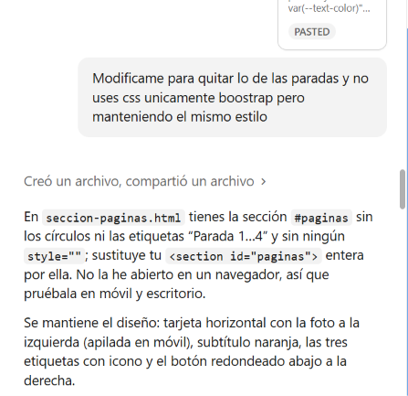
Le pedí quitar los círculos de «Parada 1…4» y pasar el CSS a Bootstrap manteniendo el mismo estilo.
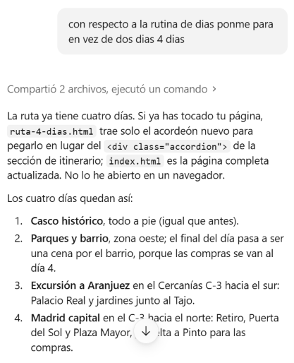
Amplié el itinerario de dos a cuatro días, con excursiones a Aranjuez y Madrid.
Página del pueblo
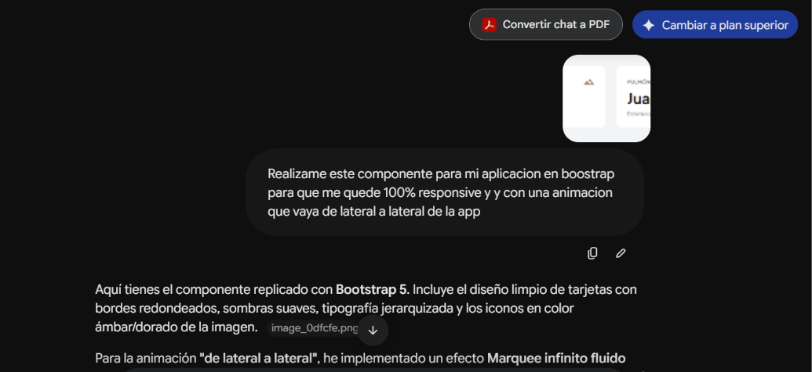
A partir de una captura, le pedí el componente de tarjetas con una animación que fuera de lado a lado de la pantalla.
Página del barrio
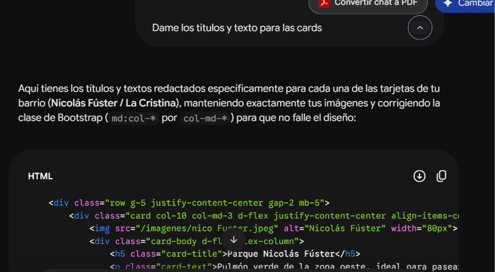
Le pedí títulos y textos para las tarjetas del barrio Nicolás Fúster.
Gemini cambió md:col-* por col-md-*, que es la sintaxis de Bootstrap 5; en Bootstrap 6, que es el que uso, la correcta es md:col-*.
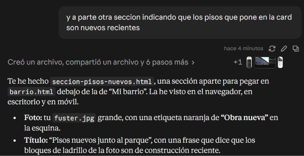
Una sección aparte para indicar que los pisos de la tarjeta son de construcción reciente.
Página del instituto
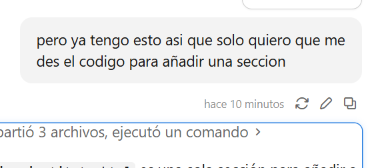
Como ya tenía tarjetas y el carrusel, le pedí solo el código de una sección nueva, sin rehacer la página.
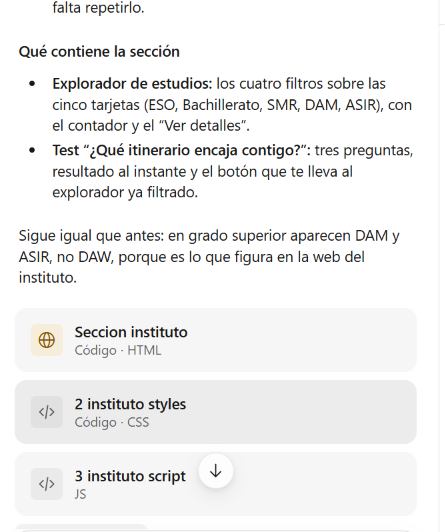
La respuesta: el HTML de la sección, el CSS para styles.css y el JavaScript para script.js.
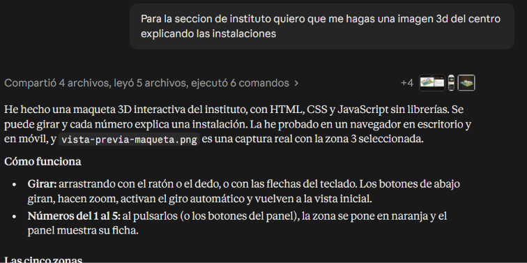
Le pedí una imagen 3D del centro explicando las instalaciones; la hizo con CSS y JavaScript, sin librerías.